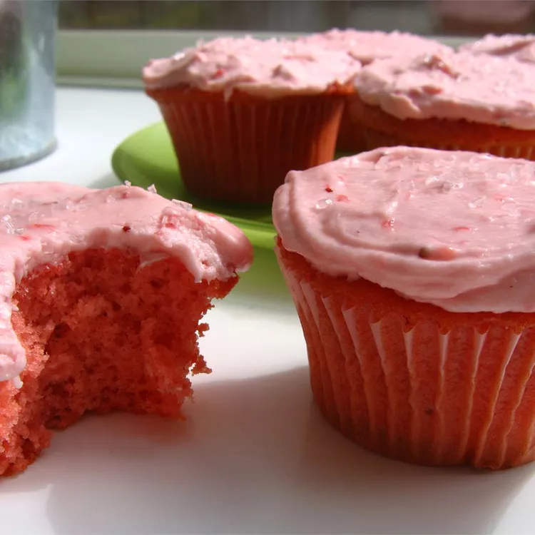

Strawberry Cake and Frosting

Description
If you love the beautiful flavor, aroma, and color of strawberries, you will absolutely
love this frosted strawberry cake.
Ingredients
- 1 (18.25 ounce) package yellow cake mix
- 1 (3 ounce) package strawberry flavored Jell-O® mix
- 3 tablespoons all-purpose flour
- ½ cup water
- ⅔ cup vegetable oil
- 4 eggs
- 1 (10 ounce) package frozen strawberries
- ½ cup butter
- 4 ¾ cups confectioners' sugar
Step by Step
- Preheat the oven to 350 degrees F (175 degrees C). Grease and flour three 9-inch
round pans.
- In a large bowl, stir together cake mix, gelatin mix, and flour. Make a well in the
center and pour in water, oil, and eggs. Stir in 1/2 of the strawberries. Beat on low
speed until blended; scrape down sides of the bowl and beat 4 minutes on medium speed.
Pour batter into prepared pans.
- Bake in the preheated oven for 30 minutes, or until a toothpick inserted into the
center of the cake comes out clean. Allow cake to cool.
- To make strawberry frosting: In a large bowl combine butter, confectioners' sugar,
and remaining frozen strawberries. Beat on high speed until creamy.